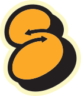

/* TODO: load svg file from public assets, unknown issue */

<a href="../pages/countdown/">
    
</a>
<nav role="navigation">
    <div id="menuToggle">
        <!--
        A fake / hidden checkbox is used as click reciever,
        so you can use the :checked selector on it.
        -->
        <input type="checkbox" id="menuCheckbox" />
        
        <!--
        Some spans to act as a hamburger.
        
        They are acting like a real hamburger,
        not that McDonalds stuff.
        -->
        <span></span>
        <span></span>
        <span></span>
        
        <!--
        Too bad the menu has to be inside of the button
        but hey, it's pure CSS magic.
        -->
        <ul id="menu">
        <!-- 
        We can use a label here to close upon click (when doing same page navigation), this
        does require a slight bit of JS.
        -->
        <li>
            <a href="../pages/countdown/">
            <label for="menuCheckbox" onclick="this.parentNode.click();">Home</label>
            </a>
        </li>
        <li>
            <a href="../pages/info/">
            <label for="menuCheckbox" onclick="this.parentNode.click();">Meer info</label>
            </a>
        </li>
        </ul>
    </div>
</nav>
